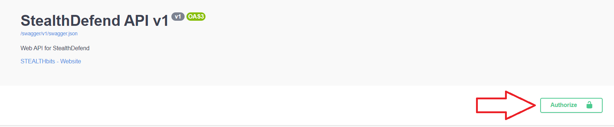
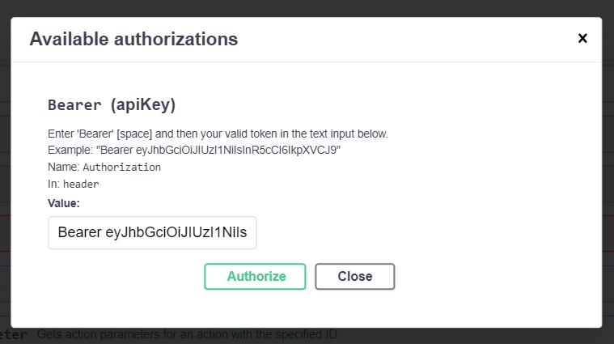
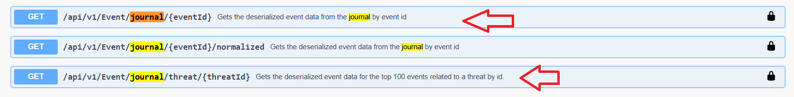
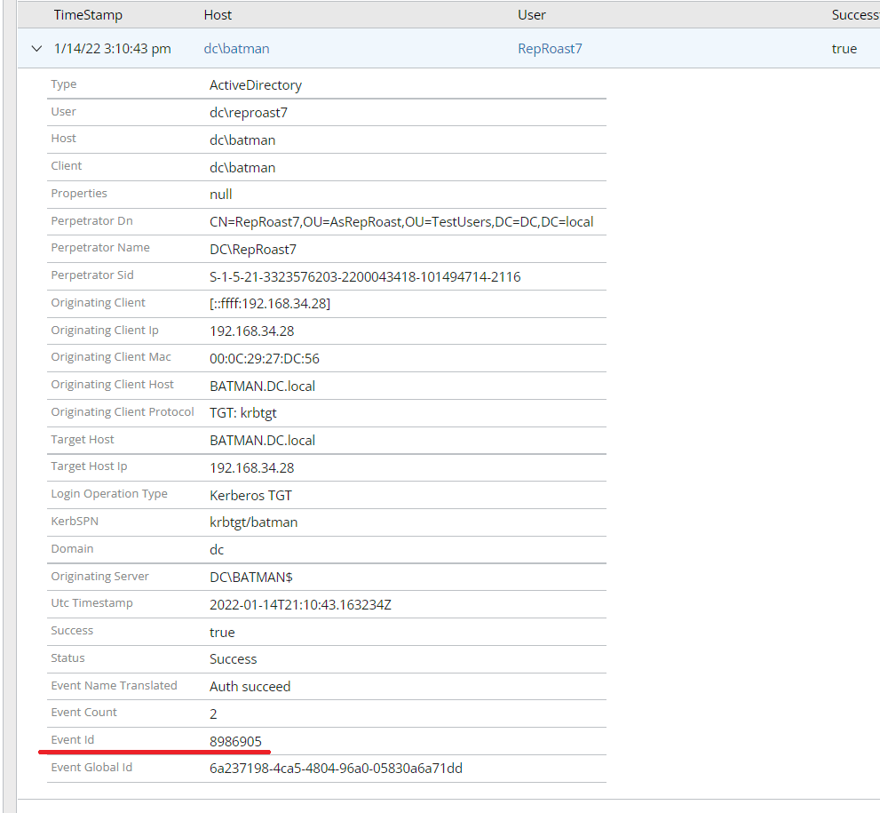
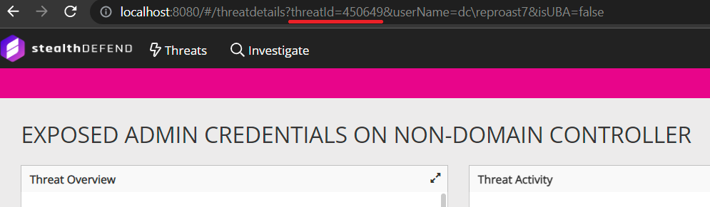
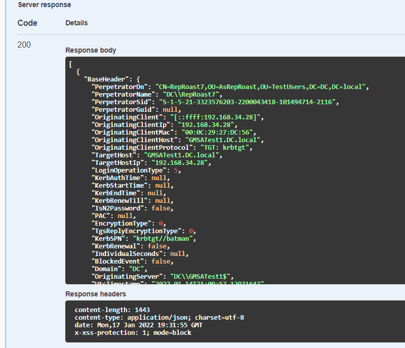
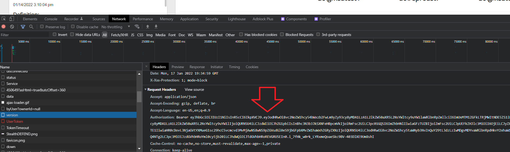

Intro
Raw data is very helpful for dev to reproduce certain issues.
NOTE. Event data may contain sensitive information. Use caution when storing info collected from customer sites.
Collection
It can be collected using the following steps:
- Visit the swagger API page: http://localhost:8080/swagger
- Enter your authorization token:

- Format is (do not include quotes) 'Bearer <APP Token>'
- Be aware that app tokens created in SD 2.6 or below may no longer be valid

3. Find the 'Journal' endpoints.
- There are 2 different endpoints.
- One collects by Event Id
- One collects all events associated to a threat
- Ignore the normalized version

- Enter your event id or threat id in the appropriate endpoint
- Ids can be gathered
- For a single event
 - For a threat

- For a single event
- Copy/Paste the raw JSON into a file. This JSON can be used directly with the message generator tool.

Alternative app token collection method
- Open the F12 dev tools on your browser
- Navigate to the network tab
- Visit an StealthDEFEND page
- Copy the app token from the header of any api call
- This token is only valid for 5 minutes
- It will already have the Bearer added
